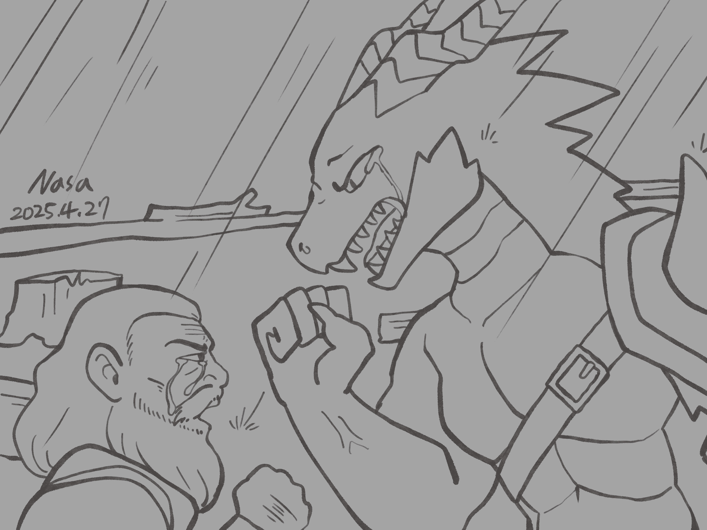
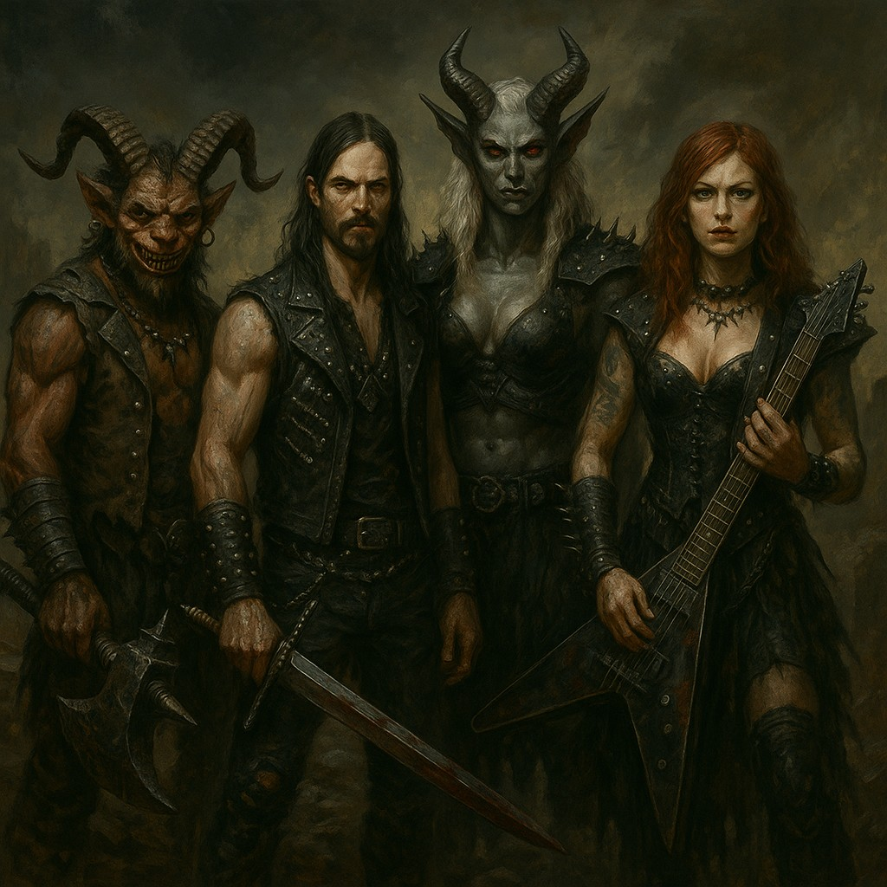
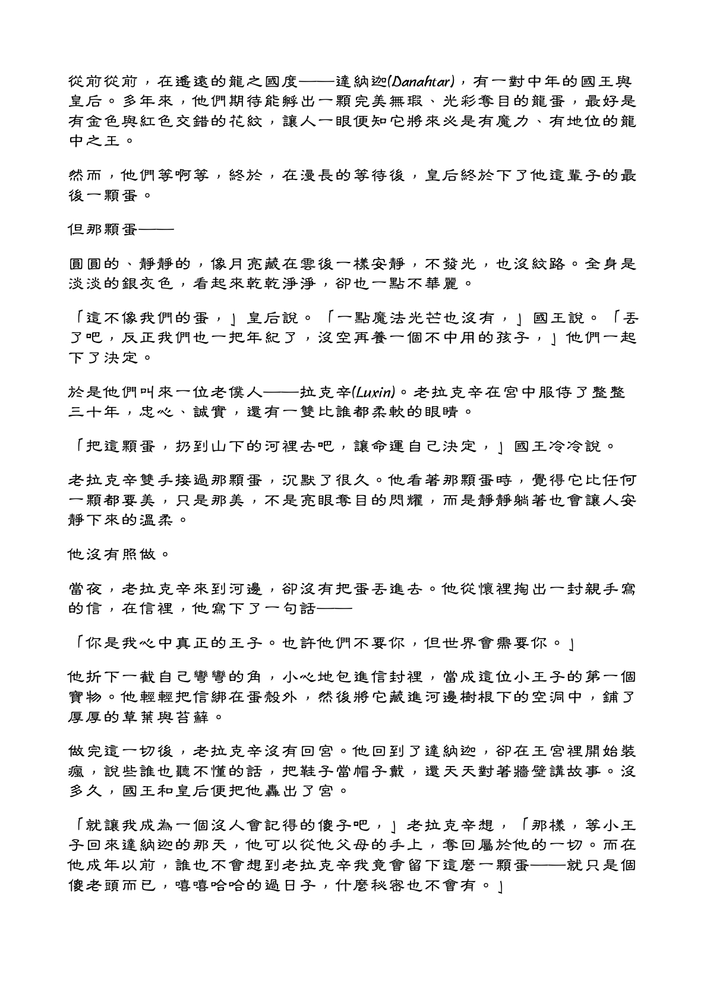

Chapter 3: Dusk of the Applewoods
Storm of Mudtown


Storm of Mudtown
15049.03.25
細劍戳向從遠方跑回的海雅特交響樂山賊背後，阿龍即時將細劍撥開，拯救了山賊的性命。
三名穿著黑色皮甲的人—方才拿著細劍的人類男子、一名咧著嘴笑的大型哥布林，以及一名壯碩、灰色皮膚的魔人—停下馬，緩緩走了下來，阿龍也第一次看到大奧斯的眼神充斥著恐懼。哥布林雙手各拖著一個麻布袋。
在魔人的威嚇下，大奧斯衝動地表示，這次他們沒有要繳錢給上層了，他們將反抗到底。此時，哥布林將一個布袋遞給了細劍男，兩人分別將布袋打開，並把武器架在從布袋中露出的俘虜的脖子上。那是一對年長的地侏男女。阿龍睜大眼睛一看，幸好不是他的父母，但他和綠先生都只記得看過這兩人，卻認不得。
細劍男子要男地侏留下他的遺言，這名地侏說道：「如果你們回到土城，請轉達給我的女兒，瑪莉貝爾— 這世界遠比她想的更廣闊。不要把自己被土城。土城無法理解她，但這個世界的其他地方，都將為她閃耀。」而當女地侏正要開口時，哥布林將巨斧砍向他的脖子，細劍男也在男地侏的脖子上劃了一刀。
隨著兩名地侏應聲落地，戰鬥一觸即發。
康妮在第一時間便撤離回海雅特交響樂的營地內，壞四人當中的其中兩人也跑了進去，但他們的兩名同伴慌亂之際，撞到了彼此，雙雙倒臥在地。
佩妮慌了，大奧斯則分心作戰，掩護佩妮的同時盡可能地擊退敵人，還要鼓舞他的山賊夥伴們。冒險者們從各個不同的位置分別向不同的敵人攻擊，而海雅特交響樂山賊們也盡可能地對敵人造成傷害，但他們的損傷很顯然的更嚴重。
突然，一陣音樂響起。戰場外，一名身著黑色皮衣，手持吉他的紅髮女子赫然出現在大家眼前，聲波讓大家感到暈眩。「海雅特終章」的成員就此到齊。

冒險者們發現在海雅特終章面前，山賊們的戰力根本無法相比，而他們嘗試施放的法術，甚至還有可能會被魔人的力量所抵消。鑰決定施法，將戰場轉換成一個沒有聲音的環境。無聲的戰鬥依然血腥，山賊們一一倒下。一瞬間，魔人現身在佩妮身邊，而佩妮看起來像是只剩一口氣了。大奧斯看了一眼阿龍，唇語說著「對不起，阿龍，我想你能理解的」。語畢，大奧斯將戰錘揮向魔人的手，將佩妮營救出來，便馬上往樹林跑去。魔人愣了一下，很快就追上。
細劍男子很快被山賊們、綠先生，以及冒險者們擊倒，冒險者們也發現他的臉上竟然是貼著一張人皮。不久後，在無法用聲波攻擊的前提下，吉他女子也只剩下將他的吉他當作武器，因此很快也就倒下了。最後，在所有剩下的人圍攻下，哥布林終於倒臥在地，但山賊們也少了不少夥伴。
眼看魔人追著大奧斯和佩妮，阿龍大喊著：「你最好給我跑的遠遠的！」接著，他和毛毛便快速跟上。阿龍眼眶滿是淚水，還不慎摔了一跤，背在背上的毛毛則看見魔人將抱著佩妮的大奧斯拐向旁邊，便消失了蹤影。
阿龍和毛毛蹣跚地走回營地口。眼看戰鬥結束，山賊們紛紛落寞地走回營地內，開始收拾家當。沒了他們的領袖，大家沒有任何眷戀，都打算下山去了。阿龍聽說有個魔法，可以透過所屬者的物品，找到他的位置，因此他到處翻找，找到了一件應該是屬於大奧斯的背心，收在了背包內。雷亞拾獲了哥布林留下的巨斧以及紅髮女已經被敲碎的吉他碎片。
康妮和清醒的兩名壞四人各騎上了一匹馬（兩名壞四人各帶著一名昏迷的同伴），羅羅則騎上最後一批。鑰將瑪莉貝爾的父母用布袋裝好後放進他的推車內。眾人在雨中，回到了土城。
土城剛入夜，雨勢則已經大到有些難以控制了。
康妮先帶大家回到了太陽議會。他敲了敲門，艾迪開了門後，眼睛直盯著阿龍，問他任務是否完成，緊接着也問他是不是已經將他女兒安全的送回家了？阿龍一時語塞，表示現在沒有山賊的問題了，但也表示佩妮沒有跟著他們回來。他向艾迪發誓，他會將佩妮找回來。
艾迪臉色鐵青，剛剛阿龍說的話，他彷彿都沒有聽進去一樣。
「你說你要蘋果木是吧？好啊，走啊。」艾迪逕自走向雨中，朝著他們家的蘋果林走去，阿龍等人則跟上。「你要蘋果木？好啊，我就砍給你啊！」艾迪抄起放在農地的斧頭，大力地、隨意地向隨意一株蘋果木揮砍，眼神夾雜著癲狂與憤怒。阿龍也像失去理智一般，拿起武器，也大力地砍著。
蘋果木隨著艾迪與阿龍的揮砍，丟入了維爾河，慢慢地朝下游流去。羅羅見狀，趕緊朝下游奔去。
累攤了的艾迪，將斧頭丟向河裡。他雙腿發抖，靜靜的走下了山。阿龍與其他人也一併跟上。
同一時間，抱了滿滿的蘋果木，羅羅決定先回渡鴉中樞。萊里看見羅羅依約帶來他所要求的蘋果木，十分開心，也先將賞金給了羅羅，但也表示其他人的錢，必須要等他們回來後再給他們。
回到議會前，艾迪伸手，敲響了議會門口的鐘。土城的人們冒着雨，紛紛從家裡走了出來，聚集在議會前。
艾迪一手握着掛在胸前的金色蘋果，一邊大聲的地對着群中喊着：「我，艾迪・蘋果木，要動用我身為議會一員的權力。」接着，艾迪看向阿龍。「何阿龍，我在此將你從土城驅逐出境，永世再也不得踏入這裡一步。同時，我也要剝奪你的姓氏，從今以後，你再也不是何家人了。」眾人震驚之餘，艾迪用力捏碎手握的金蘋果，金色的碎屑掉落在了潮濕的地上。
「我要請辭我身為議會一員的身份。」艾迪平靜地說道。「我要把身份遞交給我的兒子，凱許・蘋果木。」凱許在人群中，用力掩飾內心的慌亂，慢慢走向他的父親，但艾迪的眼神中只有憤怒、狂亂，與道不盡的哀愁。
「將家族的榮華富貴建立在自己女兒的犧牲和痛苦身上，你竟敢還引以為榮。你是個可恥的人！保護他從來都是你的責任，不是我的。」阿龍憤怒的看向艾迪。「我會找到佩妮，不是因為他是你的女兒，而是因為他是我的春天精靈，從三年前到現在，他，一直都是我的春天精靈。」
阿龍憤怒地看向逐漸遠去的艾迪，人們紛紛低頭，只有瑪莉貝爾・莫德維克 一雙堅定的眼，看着他。阿龍也看見他的父母在人群中拭着淚。
「阿龍，對不起。」凱許從其他議會成員身邊走向阿龍。「我想動用我議員的權力撤銷我父親的決定，但我剛剛問了其他議員，他們說我父親的決定是無法撤銷的，對不起……」他用力抱了抱阿龍，哭得和阿龍一樣傷心。
人群們紛紛散去。阿龍拖着落寞的神情，看了最後一眼他的家鄉，然後朝着土城的入口走出。瑪莉貝爾與冒險者們會和，看見冒險者們對他有些支吾其詞，他大概猜到些什麼了。冒險者們將瑪莉貝爾父親的遺言轉達給他，他們也看見瑪莉貝爾眼中的憤怒。「離開吧，這是一個愚昧的小鎮。」阿龍對着瑪莉貝爾說道。
土城的入口，一座原本平滑乾淨的巨大石頭，現在上面刻了一行字：阿龍。
來到渡鴉中樞的門口，鑰詢問了瑪莉貝爾的意願後，讓瑪莉貝爾看了他的父母最後一面。瑪莉貝爾輕輕的在他父母的額頭上吻了一下，用雙手將他們的眼皮闔上，便頭也不回地走入了渡鴉中樞。
在雷亞的主持下，冒險者們為瑪莉貝爾的父母進行了簡單的葬禮，將他們小心埋入阿龍與綠先生在渡鴉中樞入口旁挖出的兩個洞內。
阿龍走入渡鴉中樞的一樓，看見他的父母，找他回他們在三樓的客房。其他冒險者們則先到了二樓萊里的辦公室去。
阿龍的父親將一個珍藏的盒子拿了出來，裡頭有兩個東西：一根翠綠色的角，以及一封信。他告訴阿龍，當年他們在河裡撿到阿龍時，除了他的但，還撿到了這兩個東西。當初，他們不知道那根角是什麼，但隨着阿龍長大，他們便發現，這是與阿龍相同族類的角—那是一根龍角。信上寫了滿滿的文字，但阿龍的父母看不懂，阿龍發現他也看不懂，便先收藏了起來。阿龍的母親表示，希望這些能讓阿龍更清楚找到自己的身世。
阿龍和父母道別後，便也來到萊里的辦公室內，瑪莉貝爾也在裡頭。萊里正將答應的酬勞分給冒險者們。
大家向阿龍詢問了剛才他與父母的對話後，阿龍便將信拿了出來，表示自己看不懂。雷亞一看，這是他懂的龍語，便從阿龍那拿來讀。不看也罷，一看，雷亞得到了一個簡單卻巨大的結論：「阿龍，你是王子！」

萊里看了也好奇，不過他只看懂當中的地名：達納迦。他仔細一看，發現這是個回文—倒過來看的字，是一個他知道的地名，拉撒拿。
萊里眼睛一亮，便告訴綠先生，這地方就在上次綠先生出差去的城鎮的隔壁。萊里請綠先生駕馬車，帶冒險者們前往拉撒拿，同時也能在回程時取得上次在隔壁城鎮請人做的分析結果。綠先生感到無奈，不僅與冒險者們出生入死後卻沒拿到金幣，下山後隔天還得馬上再出發出差去。但身為萊里的員工，他也沒有辦法。
在阿龍的答應下，雷亞借了阿龍取得的綠色龍角，決定將它做成一個項鍊，讓阿龍可以掛在脖子上。
瑪莉貝爾則下定了決心，離開土城這墮落的小鎮。在鑰和毛毛的陪同下，他們一起先走回了土城，讓瑪莉貝爾回家打包行李。他要遵循他父親的遺言，踏入這寬廣的世界。
走入土城時，瑪莉貝爾的眼神被一旁樹上的某個東西吸引了注意，不過他很快地就撇頭回來了。鑰和毛毛只注意到瑪莉貝爾的異狀，詢問後也沒得到結果，也就不追問了。
15049.03.25
A rapier thrust toward the back of a Mount Hyatt Symphony bandit who had just run back from the distance, but Al-lon knocked the blade aside in time and saved the bandit's life.
Three figures in black leather armor, the human man who had been holding the rapier, a large goblin grinning broadly, and a burly gray-skinned tiefling, reined in their horses and slowly dismounted. It was the first time Al-lon had ever seen Big Os's eyes filled with fear. The goblin dragged a burlap sack in each hand.
Under the tiefling's intimidation, Big Os impulsively declared that this time they would not be paying the higher-ups any more money, and that they would resist to the bitter end. At that, the goblin handed one of the sacks to the rapier-wielding man. The two opened the sacks separately and put their weapons to the throats of the prisoners whose heads protruded from within. It was an elderly earth gnome couple. Al-lon widened his eyes and took a good look. Thankfully, they were not his parents, but neither he nor Mr. Green could recognize them beyond vaguely remembering having seen them before.
The rapier-wielding man demanded that the male earth gnome leave his final words. The gnome said, "If you return to Mudtown, please tell my daughter, Maribel, that the world is far broader than she thinks. She must not let herself be trapped by Mudtown. Mudtown cannot understand her, but elsewhere in this world, she will shine." Just as the female earth gnome was about to speak, the goblin swung a greataxe into her neck, and the rapier man slashed the male gnome's throat.
As the two earth gnomes fell to the ground, battle erupted instantly.
Connie immediately retreated back into the Mount Hyatt Symphony camp. Two of the Evil-Be4 also ran inside, but in their panic, their other two companions crashed into each other and both went sprawling onto the ground.
Penny panicked, while Big Os fought distractedly, trying both to shield Penny and to beat back the enemies as much as possible, while also rallying his fellow bandits. The adventurers attacked different enemies from different positions, and the Mount Hyatt Symphony bandits did their best to wound their attackers as well, but their losses were plainly much worse.
Suddenly, music rang out. Outside the battlefield, a red-haired woman in black leather, holding a guitar, appeared before them, and the sound waves made everyone dizzy. The members of "Hyatt Finale" had all arrived.
The adventurers quickly realized that the bandits were no match at all for Hyatt Finale, and that the spells they tried to cast might even be negated by the tiefling's power. Kaname decided to cast a spell that transformed the battlefield into an environment without sound. Even in silence, the battle remained bloody, and the bandits fell one after another. In an instant, the tiefling appeared beside Penny, who looked as though she had only a single breath left in her. Big Os glanced at Al-lon and mouthed, "I'm sorry, Al-lon. I think you understand." Then he swung his warhammer at the tiefling's hand, rescued Penny, and immediately ran for the forest. The tiefling froze for only a moment before quickly giving chase.
The rapier-wielding man was soon brought down by the bandits, Mr. Green, and the adventurers, and the adventurers discovered that his face was actually covered with a layer of human skin. Not long afterward, unable to use sonic attacks, the guitar woman was reduced to using her guitar as a weapon and was swiftly defeated as well. Finally, under the focused assault of everyone still standing, the goblin too collapsed to the ground, though the bandits had lost many companions in the process.
Seeing the tiefling pursuing Big Os and Penny, Al-lon shouted, "You'd better run as far away as you can!" Then he and Fur hurried after them. Tears filled Al-lon's eyes, and he even stumbled and fell. Riding on his back, Fur saw the tiefling force Big Os, who was carrying Penny, to turn aside, and then the three of them vanished from sight.
Al-lon and Fur staggered back to the camp entrance. With the battle over, the bandits walked back into camp in dejection and began packing up their belongings. Without their leader, none of them felt any attachment to the place anymore, and they all planned to head down the mountain. Al-lon had heard of a spell that could locate a person through an object belonging to them, so he searched everywhere until he found a vest that likely belonged to Big Os, and put it into his pack. Leah recovered the greataxe left behind by the goblin, as well as the smashed fragments of the red-haired woman's guitar.
Connie and the two conscious members of the Evil-Be4 each mounted a horse, with each of them carrying one unconscious companion, while Roel took the last horse. Kaname placed Maribel's parents into burlap sacks and loaded them into her cart. Together, in the rain, they returned to Mudtown.
Night had only just fallen on Mudtown, but by then the rain had grown so heavy it was hard to manage.
Connie first led everyone back to the Sun Council. She knocked on the door, and when Addie opened it, his eyes fixed directly on Al-lon. He asked whether the mission had been completed, and then immediately asked whether his daughter had been safely brought home. Al-lon fell briefly speechless. He said that the bandit problem was no longer an issue, but that Penny had not returned with them. He swore to Addie that he would bring Penny back.
Addie's face turned deathly pale. It was as if he had not heard a single word Al-lon had just said.
"You said you wanted Applewood, right? Fine. Come on, then." Addie marched straight out into the rain and headed for the family's apple grove, with Al-lon and the others following behind him. "You want Applewood? Fine. I'll chop it down for you!" Addie grabbed an axe that had been left near the fields and began hacking violently and indiscriminately at a random apple tree, his eyes full of rage and madness. Al-lon, as if he too had lost his reason, picked up a weapon and began chopping hard as well.
As Addie and Al-lon hacked away, branches of Applewood were thrown into the Veil River and slowly drifted downstream. Seeing this, Roel immediately sprinted after them along the river.
Exhausted, Addie hurled the axe into the river. His legs trembling, he quietly walked back down the mountain. Al-lon and the others followed him.
At the same time, carrying an armful of Applewood, Roel decided to head back first to the Raven Nexus. Riley was delighted to see that Roel had brought the Applewood she had requested as promised. She gave Roel the reward money immediately, though she added that the others would have to wait until they returned before receiving theirs.
Before going back inside the council, Addie reached out and rang the bell at the entrance. The people of Mudtown came out of their homes into the rain and gathered in front of the council.
Holding the golden apple hanging from his chest in one hand, Addie shouted loudly to the crowd, "I, Addie Applewood, am invoking my authority as a member of the council." Then he turned toward Al-lon. "Ho Al-lon, I hereby banish you from Mudtown. For all eternity, you may never again set foot here. At the same time, I strip you of your family name. From this day forward, you are no longer a member of the Ho family." As the crowd stared in shock, Addie crushed the golden apple in his fist, and glittering fragments fell onto the wet ground.
"I resign my seat on the council," Addie said calmly. "I hand that station over to my son, Cassius Applewood." From within the crowd, Cash forced down his panic and slowly walked toward his father, but Addie's eyes held nothing except anger, madness, and immeasurable grief.
"You built your family's wealth and glory on your own daughter's suffering and pain, and you still dared to take pride in it. You're a disgraceful man! Protecting her was always your responsibility, not mine." Al-lon glared at Addie in fury. "I will find Penny, not because she's your daughter, but because she is my Spring Spirit. From three years ago until now, she has always been my Spring Spirit."
Al-lon glared at Addie's retreating figure in anger as the townspeople lowered their heads one by one. Only Maribel Muddlewick met his gaze with firm eyes. Al-lon also saw his parents in the crowd, wiping away tears.
"Al-lon, I'm sorry." Cash came over to Al-lon from beside the other council members. "I wanted to use my authority as a councilor to revoke my father's decision, but I just asked the others, and they said my father's ruling can't be overturned. I'm sorry..." He hugged Al-lon tightly and cried just as hard as Al-lon did.
The crowd gradually dispersed. Wearing a desolate expression, Al-lon cast one final look at his hometown and then began walking toward the exit of Mudtown. Maribel rejoined the adventurers. Seeing how hesitant they were with her, she seemed to guess that something had happened. The adventurers passed on her father's final words to her, and they also saw the anger in Maribel's eyes. "Leave," Al-lon told her. "This is an ignorant little town."
At the entrance of Mudtown stood a huge rock that had once been smooth and clean. Now a single line had been carved into it: Al-lon.
When they reached the entrance to the Raven Nexus, Kaname asked what Maribel wanted, and then allowed her to see her parents one last time. Maribel gently kissed each of them on the forehead, closed their eyelids with both hands, and then walked into the Raven Nexus without looking back.
Under Leah's direction, the adventurers held a simple funeral for Maribel's parents and carefully buried them in two holes that Al-lon and Mr. Green had dug beside the entrance to the Raven Nexus.
Al-lon entered the first floor of the Raven Nexus, where he found his parents, who called him back to their guest room on the third floor. The other adventurers went first to Riley's office on the second floor.
Al-lon's father took out a treasured box. Inside were two things: a green horn and a letter. He told Al-lon that when they had found him in the river years ago, they had found these two items along with his egg. At the time, they had not known what the horn was, but as Al-lon grew older, they realized that it was the horn of the same kind of being as him, a dragon horn. The letter was filled with writing, but Al-lon's parents could not read it, and Al-lon discovered that he could not read it either, so he stored it away for the time being. Al-lon's mother said that she hoped these things might help him better understand his origins.
After saying goodbye to his parents, Al-lon also went to Riley's office, where Maribel was already present. Riley was in the middle of distributing the promised reward to the adventurers.
When everyone asked Al-lon what he and his parents had just discussed, he took out the letter and said that he could not read it. Leah took one look and recognized it as Draconic, a language she understood, so she took it from Al-lon and began to read. One glance was enough to give Leah a simple but enormous conclusion: "Al-lon, you're a prince!"
Riley was curious as well, though the only thing she could make out from it was the place name Danahtar. Looking more carefully, she realized it was a palindrome. Read backward, it became the place name she did know: Rathanad.
Riley's eyes lit up, and she told Mr. Green that this place was right next to the town he had traveled to on his last business trip. Riley asked Mr. Green to drive the carriage and take the adventurers to Rathanad, while also picking up the analysis results that had been commissioned in the neighboring town on the return trip. Mr. Green felt helpless. Not only had he risked life and limb alongside the adventurers and still not gotten any gold, but the very next day after coming back down the mountain, he would have to leave again on another business trip. Still, as Riley's employee, he had no choice.
With Al-lon's permission, Leah borrowed the green dragon horn Al-lon had acquired and decided to turn it into a necklace so Al-lon could wear it around his neck.
Maribel, meanwhile, made up her mind to leave the rotten little town of Mudtown behind. Accompanied by Kaname and Fur, they walked back to town with her so she could pack her things. She intended to follow her father's final words and step out into the wider world.
As they entered Mudtown, something in a tree to the side caught Maribel's eye, though she quickly turned away again. Kaname and Fur only noticed that something seemed off about her, and when their questions got no answer, they let the matter drop.